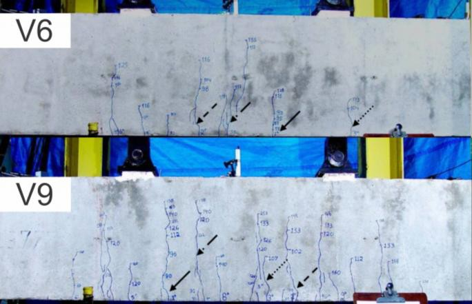
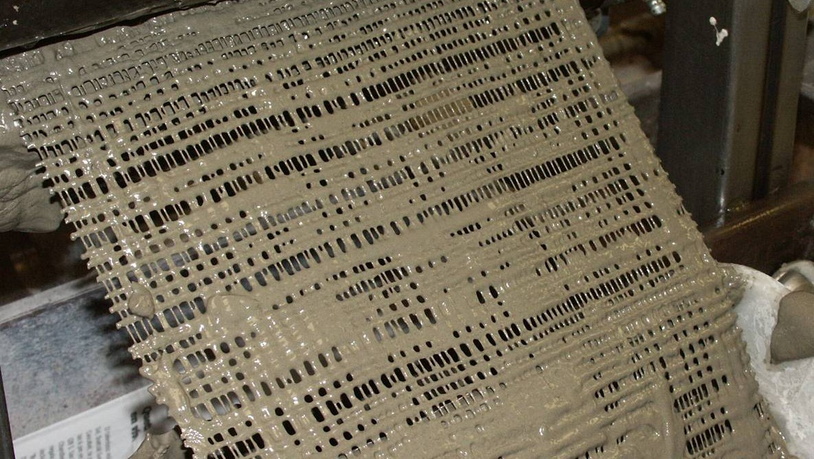
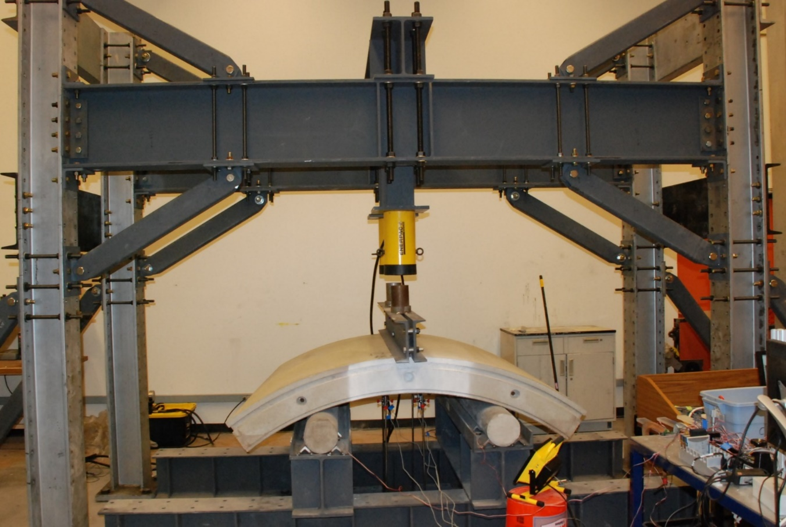
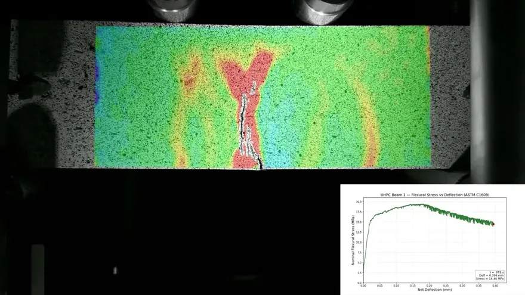
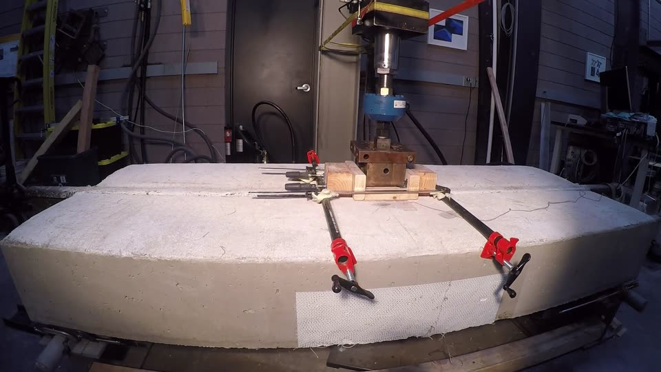

Barzin Mobasher Research Group
Mechanics of cement-based and fiber composites, from laboratory testing and constitutive modeling to design procedures and software.
The research spans fiber and textile reinforcement, fracture and interface micromechanics, durability, and high strain rate and ballistic composites. It has been applied to structures as different as thin textile reinforced panels, precast tunnel segments, light rail track slabs, and jet engine containment fabrics.
People
Placing the rebar-free fiber reinforced concrete track slab on the Valley Metro Northwest Extension, May 2023.
Research subjects
All research
Fiber reinforced concrete
Fiber reinforced concrete (FRC) is concrete with short steel or polymer fibers added during mixing. The fibers bridge the cracks that form under load, so the cracked concrete keeps carrying tension.

Hybrid reinforced concrete design
Hybrid reinforced concrete (HRC) is concrete reinforced with both continuous steel bars and short fibers mixed through the concrete. The fibers carry tension across cracks and share the load with the bars, so part of the bar reinforcement can be replaced.

Textile reinforced concrete
Textile reinforced concrete is a thin cement-based composite reinforced with layers of fabric made from continuous yarns of glass, carbon or polymer. The group developed the pultrusion process for making these laminates, measured how they crack and harden in tension, formed them into structural shapes and sandwich panels, and derived closed-form equations for their design.

Precast tunnel lining segments
A precast segmental tunnel lining is a ring of curved concrete segments placed behind a tunnel boring machine to support the ground. The group tests full-size segments reinforced with steel or synthetic fibers in flexure and under thrust loads, works the tension properties of the concrete back from beam tests for use in design, and applies statistical process control to segment production.

Ultra-high performance concrete
Mixtures developed with the Arizona Department of Transportation, flexural tests measured with digital image correlation, and a UHPC beam test replayed in 3D with its inverse analysis.

Valley Metro track slab
A light rail track slab reinforced with steel fibers and no rebar, tested over two million load cycles at ASU and built on the Northwest Extension Phase II in Phoenix.
Fields addressed
All fields- Textile and fabric reinforced concrete
- Fiber reinforced concrete, mechanics and design
- Impact, high strain rate and ballistic composites
- Numerical modeling and simulation
- Durability, shrinkage and damage
- Cementitious materials and sustainability
- Fiber and interface micromechanics
- Fracture mechanics of cement composites
- Ultra-high performance concrete
- Hybrid reinforced concrete
- Processing and manufacturing
- Pavements, slabs and infrastructure
- Repair, retrofit and strengthening
- Functional and specialty materials
- Natural and recycled fiber composites
- Structural engineering and design practice
- Precast tunnel lining segments
- Experimental methods and measurement
- Statistics, quality control and reliability
- Early-age behaviour of cement paste
- Engineering education
Selected publications
All publicationsJournal 2026
Limit-state based design of hybrid reinforced UHPC flexural beams using parametric modeling
D. D. Patel, C. Pleesudjai, N. Neithalath, B. Mobasher
Journal 2026
Mechanism of tensile load sharing in hybrid reinforced concrete flexural members
Chidchanok Pleesudjai, Devansh Patel, Daniel L. Araujo, Carlos A. S. Oliveira, Romildo D. Toledo Filho, Barzin Mobasher
Journal 2025
Efficiency of hybrid reinforced concrete beams with low reinforcement ratios
Chidchanok Pleesudjai, Carlos A. S. Oliveira, Daniel L. Araujo, Devansh Patel, Moacir Alexandre Souza de Andrade, Romildo Toledo Filho, Barzin Mobasher
HRC Designer
Analysis and design software for members made with fiber reinforced concrete, hybrid reinforced concrete, UHPC, and textile reinforced concrete. Flexural test data gives the material properties, which then carry into section and member calculations in SI or US units.

News
HRC Designer 4.3
Version 4.3 is out as a free Windows installer. It runs on the MATLAB Runtime, so no MATLAB license is needed, and the user manual is at hrcdesigner.com.
Limit-state design of hybrid reinforced UHPC beams
Published in Engineering Structures 357, 122353, together with the companion Python package parametric-uhpc.
RILEM Spring Convention and the UHPC Symposium
Two papers on the design of textile reinforced concrete at the RILEM Spring Convention 2026, and two on reinforced UHPC beams and rural bridge decks at the Fourth International Interactive Symposium on UHPC.
Laboratory footage
UHPC beam under ASTM C1609 flexure, with strain field
Digital image correlation on a UHPC beam in four-point bending, alongside the flexural stress against net deflection curve. Several strain bands form first, then one opens into a crack and the others unload.